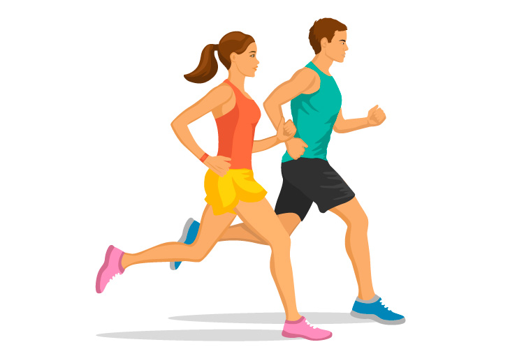

¿Quieres sentirte mejor, tener más energía, y hasta agregar años a tu vida?
Solo tienes que hacer ejercicio. Los beneficios para salud del ejercicio regular y la actividad física son difíciles de ignorar. Todas las personas se benefician del ejercicio, sin importar la edad, el sexo, o la capacidad física. ¿Necesitamos convencerte más para que comiences a moverte? Conoce estas siete maneras en que el ejercicio puede llevarte a ser más feliz y a estar más sano.
